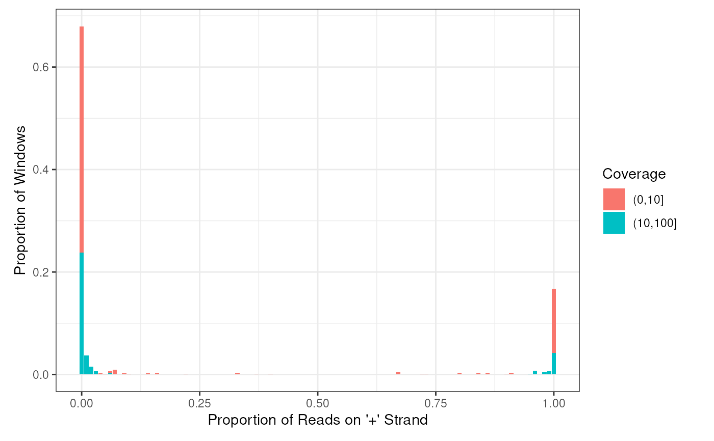

Plot the histogram of positive proportions of the input
data frame coming from getStrandFromBamFile
Usage
plotHist(
windows,
save = FALSE,
file = "hist.pdf",
groupBy = NULL,
normalizeBy = NULL,
split = c(10, 100, 1000),
breaks = 100,
useCoverage = FALSE,
heatmap = FALSE,
...
)Arguments
- windows
data frame containing the strand information of the sliding windows. Windows can be obtained using the function
getStrandFromBamFile.- save
if TRUE, then the plot will be save into the file given by
fileparameter- file
the file name to save to plot
- groupBy
the columns that will be used to split the data.
- normalizeBy
instead of using the raw read count/coverage, we will normalize it to a proportion by dividing it to the total number of read count/coverage of windows that have the same value in the
normalizeBycolumns.- split
an integer vector that specifies how you want to partition the windows based on the coverage. By default
split= c(10,100,1000), which means that your windows will be partitionned into 4 groups, those have coverage < 10, from 10 to 100, from 100 to 1000, and > 1000- breaks
an integer giving the number of bins for the histogram
- useCoverage
if TRUE then plot the coverage strand information, otherwise plot the number of reads strand information. FALSE by default
- heatmap
if TRUE, then use heat map to plot the histogram, otherwise use barplot. FALSE by default.
- ...
used to pass parameters to facet_wrap
Examples
bamfilein = system.file('extdata','s1.sorted.bam',package = 'strandCheckR')
win <- getStrandFromBamFile(file = bamfilein,sequences='10')
#> Testing paired end by checking the first 1e+05 reads of file /__w/_temp/Library/strandCheckR/extdata/s1.sorted.bam
#> Your bam file is single end
#> Reading file /__w/_temp/Library/strandCheckR/extdata/s1.sorted.bam
#> Read sequences 10
plotHist(win)
